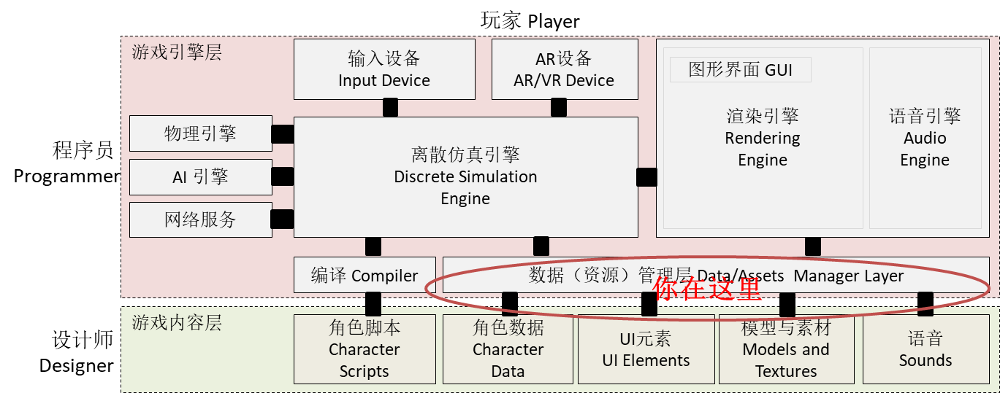

第11章、数据驱动的设计
Contents
Data
课程内容与资源

本节课内容属于游戏高级技术。如果你不打算从事游戏行业，了解即可
课程案例：
从官网商店下载 Asset Store -> Unity Essentials / Sample / Survival Shooter
1、课程简介
课程目标：
通过数据驱动设计，使得游戏代码更加稳固 (robustness)。我们可以通过改变数据，实现游戏规则、 场景布局、游戏难度的动态改变，而不要程序员的参与。 让游戏发布后，运维与设计师进行"后设计" ( Post-Design ) 成为可能。
课程知识点：
- 发布一个简单项目
- 程序资源的部署结构
- json 对象序列化与反序列化
- 需要掌握的类：PlayerPrefs、Application、WWW、Resource、AssetsBoundle
- 资源下载与转储
- 数据驱动的设计
2、项目发布基础 (publish basic)
准备：
- 创建一个空项目，例如 app
- Asset Store -> Unity Essentials / Sample / Survival Shooter 选导入[import]
2.1 发布简单项目
任何项目至少有一个场景，当然也会有多个场景。本部分只考虑一个场景的项目 演示案例中，Assets / _CompletedAssets / Scenes / Level 01 5.x 场景。
【操作】发布项目：
- 菜单 File -> Build Setting … 或 Build & Run
- 选择你需要的平台，选择平台参数，如果没有对应平台的发布包则显示按钮 Open Download Page。非 windows 平台还需要相关 SDK 开发包。
- 平台选择下面有一个按钮 Player Settings … 其实是“开发者设置”才对哦
- 选择场景。因为只有一个，如果多个就要设置 0 号场景作为启动场景
- 选择 Build And Run， 得到一个 exe 例如 shooter.exe
【结果与观察】
- 产生了哪些目录？文件？
- 运行该游戏，玩一下！
这个游戏怎么制作的？
2.2 理解游戏的变更类型
不用说玩家，就是你的游戏测试人员也不会喜欢一天安装一次系统，以适应游戏的变更。 如果是 iOS 平台，一次变更申请，几周就过去了。对于游戏这种竞争、模仿激烈的行业，变更慢几乎是死亡的步调。
变更 游戏开发必须考虑的要素之一。 其他还有那些要素？ 兼容 - 跨平台 ； 稳定 - 不意外崩溃 ；节能 - 不做暖手宝 ； 性能 - 没你想的重要！ 显然，每个话题都需要一系列的研究。
变更也分为几类（欢迎同学补充）：
-
可预见的变更
- 游戏参数调整
- 游戏逻辑跟新
- 游戏资源替换
-
升级变更
- Bug 补丁
- 产品升级
变更的种类不同，它发生的阶段、频度、升级技术手段也不一样。 对于纯脚本语言（解释性语言）如 ，多采用局部更新策略。 对于 Unity 这样编译型的，都编译成 exe 了，如何办？
web 3d 技术推荐
- three.js http://threejs.org/
- Web GL (Open GL for web) https://www.khronos.org/webgl/
- Get Start http://get.webgl.org/
2.3 Unity资源部署结构
先简单介绍 Unity 资源部署结构，你必须理解才能分解 Unity 项目，实现程序动态更新方法。
[#f1]_ 是比较靠谱的中文总结。尽管已经历按官网文档验证，正确性与兼容性有待实验验证
导致各种问题主要受 平台虚拟机实现机制、安全策略 等的限制。尽管如此，Unity 程序可部署资源的位置可分为四大类：
-
Resources
- 打包到应用程序，以资源的形式管理，每个资源都有 ID
- 项目中任意命名 Resources 目录中的文件，都会打包成资源文件
- 主程序自动加载， 或用 Resource 类加载
- 无法更改，除非重新安装
-
AssetBundle [#f4]_
- 联网资源
- 压缩格式的资源的集合，可以按应用程序需要从游戏资源节点下载
- 用 WWW 类从中心下载， 用 AssetBundle 加载
-
StreamingAssets [#f3]_
- 项目文件中命名 StreamingAssets 根目录下的内容
- 可以是任意内容，例如，一个电影的原始文件 xx.mov, 不同平台对视屏支持不一样，详见 [#f2]_
- 部署时，直接复制到制定平台特定目录（安卓平台打包成 jar）。不编译，不做任何处理
- 不同平台目录不一样
- 建议用 WWW 类访问，否则你需要使用支持 jar (zip) 读写的类。(jar? 写也不方便)
-
PersistentDataPath
- 程序存放数据的目录
- 用以用 WWW 类读，也可以用 FileStream 读写
【操作】资源部署：
- 在项目 Assets 下建立文件夹 StreamingAssets ，然后放几个你知道的文件
- 在项目任意位置建立文件夹 Resources ，拷贝一个文件，并记录文件大小
- 重新发布项目
【结果与观察】
- xx_Data 中是否多了 StreamingAssets 文件夹
- xx_Data/Resouces 是否多了文件
3、 序列化技术
序列化 就是把一个内存对象变为与地址无关的可传输的数据格式，通常是文本格式；反序列化反之。
一般情况下，对象序列化指把一个对象用 XML，YAML 或 json 文本表示。 尽管 Unity 场景文件是 yaml 格式的，但并没有提供运行时内置支持。
Unity 已内置 json 支持。
3.1 [Serialization] 标签
|
|
【操作】
1、 在一个 monoBehavior 中，添加上述类，[Serializable]标签，说明这个类可以被序列化。 2、 在 start() 中实例化一个该类的对象
|
|
3.2 JsonUtility 类
该类非常简单，只有三个静态方法：
| 方法 | 说明 |
|---|---|
| FromJson | 用 Json 数据实例化一个新对象 |
| FromJsonOverwrite | 用 Json 数据重新赋值一个对象 |
| ToJson | 将对象变成一个字符串 |
3.3 Json序列化与反序列化
【操作】
3、 在start() 输入
|
|
输出
|
|
4、 继续输入
|
|
完成反序列化，生成了新的对象实例。
3。4 实战程序
实战中，程序一般如下编写
|
|
4、应用管理相关的类
4.1 PlayerPrefs 类
描述：保存游戏 session 之间的数据。
作用：就是一个字典，它场景切换时可保存一些数据。在游戏结束时，会自动调用 Save！
数据保存位置：开发者不需要关心。也不要调用 Save， 它可能会导致游戏停顿
函数：http://docs.unity3d.com/ScriptReference/PlayerPrefs.html
实战：定义一个单实例类管理这个字典一定没有错。字典的每个 Key 定义成常量或只读字符串。 建议保存玩家的生命值、收益等。对于用户历史战绩这样的数据，不宜放在这里。
判断准则：现场恢复相关的数据！
4.2 Application 类
描述：控制运行时环境，实现场景切换。包括一些静态变量和方法。
通常需要关注的静态变量
| 方法 | 说明 |
|---|---|
| backgroundLoadingPriority | 控制每帧处理中，异步加载资源耗用的总时间 |
| platform | 平台 |
| productName | 产品名称 |
| version | 产品版本 |
| dataPath | app 的位置，不同平台不一样，在安卓平台也打包到 apk ，不能写 |
| persistentDataPath | 用户数据存储位置 |
| streamingAssetsPath | 用户后加载的资源位置，在安卓平台也打包到 apk ，不能写 |
| temporaryCachePath | 通常用于存储 WWW 下载时的临时文件 |
场景管理相关静态方法，5.0 以后的手册就没说明了，但可以用。
| 方法 | 说明 |
|---|---|
| LoadLevel(“场景名”) | 加载场景，加载完清空当前场景所有对象。LoadLevel(0) 表示加载启动场景 |
| LoadLevelAsync(“场景名”) | 异步加载，加载完清空当前场景所有对象 |
| LoadLevelAdditive(“场景名”) | 添加场景 |
| LoadLevelAdditiveAsync(“场景名”) | 异步添加 |
当然场景管理也可以使用 UnityEngine.SceneManagement.SceneManager 类
4.3 读文件 WWW 类
描述：WWW 是一个万能读文件的类。支持 http://, https:// , file:// 和 jar:file:// 等协议。
典型工作方法是后台线程
|
|
WWW 类会支持多种数据操作，例如： bytes 支持2进制数据，text 支持文本等等。 具体见 http://docs.unity3d.com/ScriptReference/WWW.html
需要关注的静态函数：
EscapeURL ：让你的 URL 可以正确处理中文、空格等字符
LoadFromCacheOrDownload ： 下载 AssetBundle 使用指定版本。如果已下载到 cache 就不下载。
以下是用 Cache 方式下载一个 AssetBundle
|
|
4.4 实现资源的转储
每次从互联网获取资源是不可取的，所以需要转储到 Application.temporaryCachePath 位置， 或 Application.PersistentDataPath 位置。
代码
|
|
【操作】
- 定义一个资源。 使用 file://协议，例如: file:///D:/pml/courses/se347-游戏/build/html/11_publish_serialization.html
- 使用代码完成下载
【结果与思考】
- 为什么要下载？
- 如何实现 CacheOrDownload 呢？
Author 潘茂林
LastMod 2020-11-21